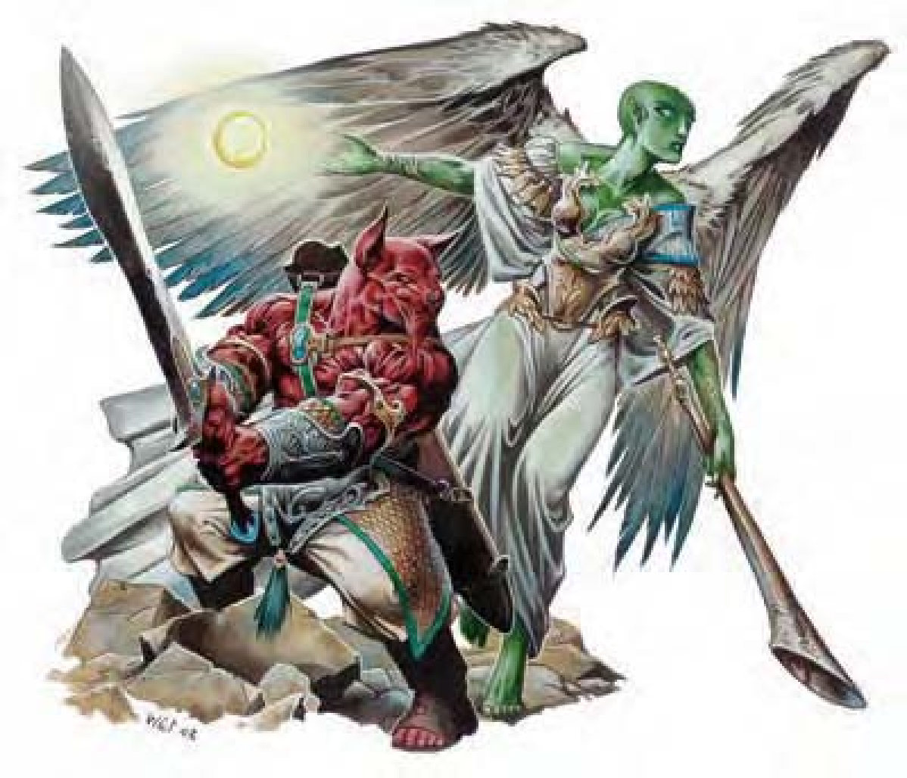

亚空神族是居住于天界的天界生物。亚空神族肩负保卫天界的任务，并自命为非邪恶无辜生物的保护者。他们是魔族（下层界生物）的死敌，特别憎恶恶魔。亚空神族通晓天界语、炼狱语、龙语。亚空神族还拥有巧言能力，几乎可和任何生物沟通。
战斗除非被激怒，否则亚空神族不会采取攻击（不过，亚空神族拥有强烈的正义感，通常很容易被激怒）。他们尽量避免伤害其他善良阵营的生物，也尽量以非伤害性法术与只能造成非致死伤害的武器进行攻击。尽管如此，无论面对何种阵营的敌人，愤怒的亚空神族都是很可怕的。
在拥有优势的情况下，亚空神族倾向正面迎战敌人。但若敌人较强，亚空神族也会用一切办法拉近彼此差距（采用连打带跑的战术或于近战前先保持距离施放法术）。
亚空神族特性（除非个别叙述中另有说明）：

一个发光球体朝你飘来。圣光天使看起来像飘浮的光球，亮度与火把差不多。圣光天使可以尝试降低亮度，但只有死后才会完全熄灭。圣光天使非常友善，经常热切地提供任何协助。不过，圣光天使的躯体是一团气体，其力量不足以对实体造成太大影响。圣光天使的声音轻柔，如音乐一般。
| 资料栏位 | 圣光天使 小型异界生物 (亚空、外界、善良、守序) |
|---|---|
| 生命骰 | 1d8 (4HP) |
| 先攻 | +4 |
| 速度 | 飞行60英尺 (灵活) (12格) |
| 防御等级 | 15 (+1体型、+4天生)、接触11、措手不及15 |
| 基本攻击/擒抱 | +1 / -8 |
| 攻击 | 光射线+2远程接触 (1d6) |
| 全力攻击 | 光射线+2远程接触 (1d6) |
| 特殊攻击 | 类法术能力 |
| 特殊能力 | 威慢灵光、伤害减免10/邪恶且魔法、黑暗视觉60英尺、对电击、石化免疫、反邪恶法阵、传送、巧言 |
| 豁免 | 强韧+2 (对抗毒素+6)、反射+2、意志+2 |
| 属性 | 力量1、敏捷11、体质10、智力6、感知11、魅力10 |
| 技能 | 专注+4、交涉+4、界域知识+2、聆听+4、察言观色+4、侦察+4 |
| 专长 | 精通先攻 |
| 环境 | 天界七山 |
| 组织 | 单独、成双或中队 (3-5) |
| 挑战级数 | 2 |
| 宝藏 | 无 |
| 阵营 | 总是守序善良 |
| 进化 | 2-4HD (小型) |
| 等级修正值 | ― |
战斗：圣光天使没本领进行近战。他们通常盘旋至敌人进入其“威慢灵光”范围内，再以“光线”攻击。圣光天使倾向集中攻击单一敌人，以求迅速减少敌人数量。
威慢灵光（超自然）：通过意志检定（DC=12）则无效。
光射线（特异）：圣光天使的光射线距离为30英尺。任何伤害减免都无法抵挡光射线攻击。
类法术能力：随意施展――“援助术”、“侦测邪恶”、“不灭明焰”。施法者等级3。
健壮的人形生物，有着似犬的头部。静如处子，动如脱兔。宽阔背部斜背着巨剑，神情显露着智慧与保护。獒首天使貌似强壮的人类，有着似犬的头部。獒首天使协助无辜者与无助者抵抗邪恶。宽阔肩膀与多肉拳头在显示獒首天使是天生的战斗者。同理，其有力的腿部也代表敌人逃不了多远。
战斗：獒首天使总是全力战斗。他们倾向以天生武器攻击，但偶尔使用巨剑。在计算伤害减免时，獒首天使的天生武器与持有武器都视为善良阵营与守序阵营。
类法术能力：随意施展――“援助术”、“不灭明焰”、“侦测邪恶”、“传讯术”。施法者等级6。
威慢灵光（超自然）：通过意志检定（DC=16）则无效。
移形（超自然）：獒首天使可以化为任何小型至大型犬。犬形态下，獒首天使失去啮咬、挥击与巨剑攻击，但获得其选取形态下的啮咬攻击。视用途不同，上述所谓小型至大型犬包含犬类与狼类的动物形态。
技能：犬形态下，獒首天使在进行“躲藏”与“生存”检定时具有+4环境加值。
獒首天使英杰是强大的正义斗士，全心全意地追逐并摧毁任何形式的邪恶。
战斗：獒首天使英杰成年累月地生出对武器的热爱。他们喜欢使用神圣巨剑，胜于以啮咬、挥击进行攻击。
类法术能力：随意施展――“援助术”、“不灭明焰”、“侦测邪恶”、“传讯术”。施法者等级6。
威慢灵光（超自然）：由于魅力属性值较高，獒首天使英杰此能力的意志检定（DC=18）也随之调整。
破邪斩（超自然）：每天3次，獒首天使英杰可在对邪恶阵营敌人进行一般近战攻击时，造成11点额外伤害。且攻击检定具有+3调整值。
移形（超自然）：獒首天使英杰可化为任何小型至大型犬。
圣武士能力：勇气灵光、善良灵光、“侦测邪恶”、神恩、神佑、圣疗（每天33点）、“移除疾病”（每周2次）、专用座骑（青少年青铜龙）。
一般已准备圣武士法术（2/2；豁免检定DC=12+法术等级）：一级――“神眷”、“防护邪恶”；二级――“蛮力术”、“耀眼术”。
物品：+3全身铠甲、+2寒铁巨剑。
许多獒首天使英杰在冒险途中和青铜龙走得很近，使得某些青铜龙愿意充任其座骑。二者的关系比圣武士与其座骑的特殊连结更加密切。龙与亚空神族原本就是盟友，同为世界正义的强力守护者。青少年青铜龙座骑获得额外2HD、力量+4、天生防御+4、精通反射闪避、所有移动形态的速度+10英尺。然而，青铜龙无法像其他圣武士座骑一样命令其同类。
獒首天使人物具有下列种族特性：
形似有翼的绿色精灵，拥有超乎自然的良善与美貌。该生物举起巨大的银色号角，吹出尖锐而震撼灵魂的乐音。号手天使是天界的传讯者与传令官，但也拥有不错的武艺。每个号手天使都带着一把6英尺长的闪亮银色号角。
| 资料栏位 | 号手天使 (Trumpet Archon) 中型异界生物（亚空、外界、善良、守序） |
|---|---|
| 生命骰 | 12d8+72 (126HP) |
| 先攻 | +7 |
| 速度 | 40英尺 (8格)、飞行90英尺 (良好) |
| 防御等级 | 27 (+3敏捷、+14天生)、接触13、措手不及24 |
| 基本攻击/擒抱 | +12 / +17 |
| 攻击 | “+4巨剑”+21近战 (2d6+11 / 19-20) |
| 全力攻击 | “+4巨剑”+21 / +16 / +11近战 (2d6+11 / 19-20) |
| 特殊攻击 | 类法术能力、法术、号手 |
| 特殊能力 | 威慢灵光、伤害减免10/邪恶、黑暗视觉60英尺、对电击、石化免疫、反邪恶法阵、法术抗力29、传送、巧言 |
| 豁免 | 强韧+14 (对抗毒素+18)、反射+11、意志+11 |
| 属性 | 力量20、敏捷17、体质23、智力16、感知16、魅力16 |
| 技能 | 专注+21、交涉+20、脱逃+18、驯养动物+18、任一知识+18、聆听+18、潜行+18、表演 (管乐器)+18、骑术+20、察言观色+18、侦察+18、绳技+3 (捆绑+5) |
| 专长 | 盲战、顺势斩、战斗反射、精通先攻、猛力攻击 |
| 环境 | 天界七山 |
| 组织 | 单独、成双或中队 (3-5) |
| 挑战级数 | 14 |
| 宝藏 | 无钱币、双倍宝物、标准物品 |
| 阵营 | 总是守序善良 |
| 进化 | 13-18HD (中型) ; 19-36HD (大型) |
| 等级修正值 | +8 |
战斗：号手天使蔑视近战，倾向用法术快速消灭敌人以便执行勤务。若被迫无法脱身，则会吹起号角猛烈攻击。
类法术能力：随意施展――“侦测邪恶”、“不灭明焰”、“传讯术”。施法者等级12。
威慢灵光（超自然）：通过意志检定（DC=21）则无效。
法术：号手天使施神术时视同14级牧师。号手天使可由下列领域择二：风、破坏、善良、秩序、战争（加上其神�o的任何其他领域）。豁免DC的调整值与感知调整值相同。
一般已准备牧师法术（6/7/7/6/5/4/4/3；豁免检定DC=13+法术等级）：零级――“侦测魔法”、“光亮术”、“净化食粮”、“阅读魔法”、“提升抗力”(2)；一级――“祝福术”(2)、“神眷”(2)、“防护混乱”*、“圣域术”、“虔诚护盾”；二级――“援助术”*、“蛮力术”(2)、“崇敬术”、“次级复原术”、“博识术”(2)；三级――“昼明术”、“消除隐形”、“反混乱法阵”*、“魔化防具”、“防护能量伤害”(2)；四级――“驱逐术”、“神能”、“圣光击”*、“中和毒性”、“法术免疫”；五级――“反制邪恶”*、“集体治疗轻伤”、“异界传送”、“死者复活”；六级――“剑刃障壁”*、“放逐术”、“医疗术”、“亡灵归亡”；七级――“律言”*、“圣言”、“集体治疗重伤”。
* 领域法术。领域：善良、秩序。
号手（超自然）：号手天使的号角可发出极度清澈的美妙乐音，也可发出令人敬畏的凛然声响。100英尺内的所有其他生物必须通过强韧检定（DC=19），否则陷入麻痹1d4轮。豁免DC的调整值与魅力调整值相同。号手天使也可使用即时动作命令号角变成“+4巨剑”。一旦被偷走，号角就会变成无用的废铁。号手天使取回后，号角便恢复正常。偷号角被抓到可不是好玩的。
| 资料栏位 | 獒首天使 中型异界生物 （亚空、外界、善良、守序） |
獒首天使英杰、11级圣武士 中型异界生物 （亚空、外界、善良、守序） |
|---|---|---|
| 生命骰 | 6d8+6 (33HP) | 6d8+18 加上 11d10+33 (143HP) |
| 先攻 | +4 | +4 |
| 速度 | 40英尺 (8格) | 穿着全身铠甲时30英尺 (6格)；基本速度40英尺 |
| 防御等级 | 19 (+9天生)、接触10、措手不及19 | 30 (+9天生、+11"+3全身铠甲")、接触10、措手不及30 |
| 基本攻击/擒抱 | +6 / +8 | +17 / +22 |
| 攻击 | 啮咬+8近战 (1d8+2)；或巨剑+8近战 (2d6+3 / 19-20) | “+2寒铁巨剑”+25近战 (2d6+9 / 19-20)；或啮咬+22近战 (1d8+5) |
| 全力攻击 | 啮咬+8近战 (1d8+2)与挥击+3近战 (1d4+1)；或巨剑+8 / +3近战 (2d6+3 / 19-20)及啮咬+3近战 (1d8+1) | “+2寒铁巨剑”+25 / +20 / +15 / +10近战 (2d6+9 / 19-20)及啮咬+17近战 (1d8+2)；或啮咬+22近战 (1d8+5)及挥击+17近战 (1d4+2) |
| 特殊攻击 | 类法术能力 | 破邪斩、法术、类法术能力、每天可驱散不死生物6次 |
| 特殊能力 | 威慢灵光、移形、伤害减免10/邪恶、黑暗视觉60英尺、对电击、石化免疫、反邪恶法阵、灵敏嗅觉、法术抗力16、传送、巧言 | 威慢灵光、移形、伤害减免10/邪恶、黑暗视觉60英尺、对电击、石化免疫、反邪恶法阵、圣武士能力、灵敏嗅觉、法术抗力27、传送、巧言 |
| 豁免 | 强韧+6 (对抗毒素+10)、反射+5、意志+6 | 强韧+18 (对抗毒素+22)、反射+11、意志+13 |
| 属性 | 力量15、敏捷10、体质13、智力10、感知13、魅力12 | 力量21、敏捷10、体质16、智力8、感知14、魅力16 |
| 技能 | 专注+10、交涉+3、躲藏+9*、跳跃+15、聆听+10、潜行+9、察言观色+10、侦察+10、生存+10* (追踪+12) | 专注+20、交涉+19、躲藏+2*、跳跃+0、聆听+10、骑术+14、察言观色+19、侦察+10、生存+2* |
| 专长 | 精通先攻、猛力攻击、追踪 | 精通先攻、领导力、骑乘战斗、快速骑乘攻击、追踪、专攻武器（巨剑） |
| 环境 | 天界七山 | 天界七山 |
| 组织 | 单独、成双或中队 (3-5) | 单独或与青少年青铜龙一起 |
| 挑战级数 | 4 | 16 |
| 宝藏 | 无钱币、双倍宝物、标准物品 | 标准 |
| 阵营 | 总是守序善良 | 总是守序善良 |
| 等级修正值 | +5 | +5 |